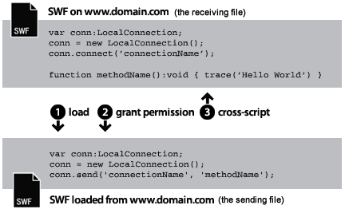
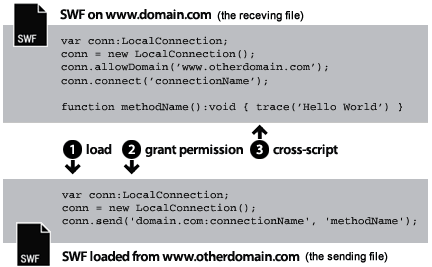
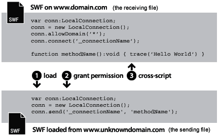
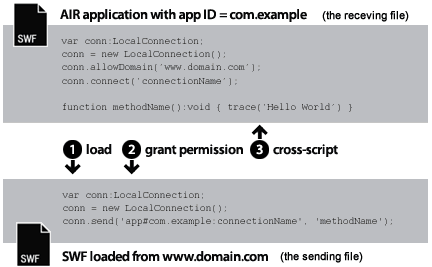
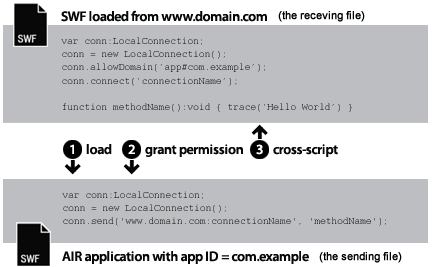
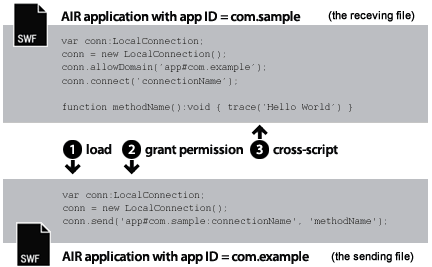

| window.runtime property | window.runtime.flash.net.LocalConnection |
| Inheritance | LocalConnection |
| Runtime Versions: | AIR 1.0, |
- Within a single SWF file
- Between multiple SWF files
- Between content (SWF-based or HTML-based) in AIR applications
- Between content (SWF-based or HTML-based) in an AIR application and SWF content running in a browser
Note: AIR for TV devices support communication only between SWF-based content in AIR applications.
Local connections enable this kind of communication between SWF files without the use of fscommand()
or JavaScript. LocalConnection objects can communicate only among files that are running
on the same client computer, but they can be
running in different applications — for example, a file running in a browser
and a SWF file running in Adobe AIR.
There are three ways to add callback methods to a LocalConnection object:
- Subclass the LocalConnection class and add methods.
- Set the
LocalConnection.clientproperty to an object that implements the methods. - Create a dynamic class that extends LocalConnection and dynamically attach methods.
To understand how to use LocalConnection objects to implement communication between two files,
it is helpful to identify the commands used in each file. One file is called the receiving file;
it is the file that contains the method to be invoked. The receiving file must contain a LocalConnection object
and a call to the connect() method. The other file is called the sending file;
it is the file that invokes the method. The sending file must contain another LocalConnection object
and a call to the send() method.
Your use of send() and connect() differs depending on whether the
files are in the same domain, in different domains with predictable domain names,
or in different domains with unpredictable or dynamic domain names. The following paragraphs
explain the three different situations, with code samples for each.
Same domain. This is the simplest way to use a LocalConnection object,
to allow communication only between LocalConnection objects that are located in the same domain,
because same-domain communication is permitted by default. When two files from the same domain communicate,
you do not need to implement any special security measures, and you simply pass the same
value for the connectionName parameter to both the connect()
and send() methods:

// receivingLC is in http://www.domain.com/receiving.swf
receivingLC.connect('myConnection');
// sendingLC is in http://www.domain.com/sending.swf
// myMethod() is defined in sending.swf
sendingLC.send('myConnection', 'myMethod');
Different domains with predictable domain names.
When two SWF files from different domains communicate,
you need to allow communication between the two domains by calling the allowDomain()
method. You also need to qualify the connection name in the send() method
with the receiving LocalConnection object's domain name:

// receivingLC is in http://www.domain.com/receiving.swf
receivingLC.allowDomain('www.anotherdomain.com');
receivingLC.connect('myConnection');
// sendingLC is in http://www.anotherdomain.com/sending.swf
sendingLC.send('www.domain.com:myConnection', 'myMethod');
Different domains with unpredictable domain names.
Sometimes, you might want to make the file with the receiving LocalConnection object
more portable between domains. To avoid specifying the domain name in the send() method,
but to indicate that the receiving and sending LocalConnection objects
are not in the same domain, precede the connection name
with an underscore (_), in both the connect() and send() calls.
To allow communication between the two domains, call the allowDomain() method
and pass the domains from which you want to allow LocalConnection calls.
Alternatively, pass the wildcard (*) argument to allow calls from all domains:

// receivingLC is in http://www.domain.com/receiving.swf
receivingLC.allowDomain('*');
receivingLC.connect('_myConnection');
// sendingLC is in http://www.anotherdomain.com/sending.swf
sendingLC.send('_myConnection', 'myMethod');
From Flash Player to an AIR application.
A LocalConnection object created in the AIR application sandbox uses a special string as it's connection
prefix instead of a domain name. This string has the form:
app#appID.pubID where appID is the application ID and pubID is the publisher ID of the application.
(Only include the publisher ID if the AIR application uses a publisher ID.) For example, if an
AIR application has an application ID of, "com.example", and no publisher ID, you could use:
app#com.example:myConnection as the local connection string. The AIR application also must call
the allowDomain() method, passing in the calling SWF file's domain of origin:

// receivingLC is an AIR application with app ID = com.example (and no publisher ID)
receivingLC.allowDomain('www.domain.com');
receivingLC.connect('myConnection');
// sendingLC is in http://www.domain.com/sending.swf
sendingLC.send('app#com.example:myConnection', 'myMethod');
Note: If an AIR application loads a SWF outside the AIR application sandbox, then the rules for establishing a local connection with that SWF are the same as the rules for establishing a connection with a SWF running in Flash Player.
From an AIR application to Flash Player.
When an AIR application communicates with a SWF running in the Flash Player runtime,
you need to allow communication between the two by calling the allowDomain()
method and passing in the AIR application's connection prefix. For example, if an
AIR application has an application ID of, "com.example", and no publisher ID, you could pass the string:
app#com.example to the allowDomain() method.
You also need to qualify the connection name in the send() method
with the receiving LocalConnection object's domain name (use "localhost" as the domain for SWF files loaded from the
local file system):

// receivingLC is in http://www.domain.com/receiving.swf
receivingLC.allowDomain('app#com.example');
receivingLC.connect('myConnection');
// sendingLC is an AIR application with app ID = com.example (and no publisher ID)
sendingLC.send('www.domain.com:myConnection', 'myMethod');
From an AIR application to another AIR application.
To communicate between two AIR applications,
you need to allow communication between the two by calling the allowDomain()
method and passing in the sending AIR application's connection prefix. For example, if the sending
application has an application ID of, "com.example", and no publisher ID, you could pass the string:
app#com.example to the allowDomain() method in the receiving application.
You also need to qualify the connection name in the send() method
with the receiving LocalConnection object's connection prefix:

// receivingLC is an AIR application with app ID = com.sample (and no publisher ID)
receivingLC.allowDomain('app#com.example');
receivingLC.connect('myConnection');
// sendingLC is an AIR application with app ID = com.example (and no publisher ID)
sendingLC.send('app#com.sample:myConnection', 'myMethod');
You can use LocalConnection objects to send and receive data within a single file, but this is not a typical implementation.
For more information about the send() and connect() methods, see the discussion of the
connectionName parameter in the LocalConnection.send() and
LocalConnection.connect()entries. Also, see the allowDomain() and domain entries.
See also
LocalConnection.allowDomain()
LocalConnection.domain
Communicating with other Flash Player and AIR instances
 Hide Inherited Public Properties
Hide Inherited Public Properties Show Inherited Properties
Show Inherited Properties| Property | Defined By | ||
|---|---|---|---|
| client : Object
Indicates the object on which callback methods are invoked. | LocalConnection | ||
 | constructor : Object
A reference to the class object or constructor function for a given object instance. | Object | |
| domain : String [read-only]
A string representing the domain of the location of the current file. | LocalConnection | ||
| isPerUser : Boolean | LocalConnection | ||
| isSupported : Boolean [static] [read-only]
The isSupported property is set to true if the
LocalConnection class is supported on the current platform, otherwise it is
set to false. | LocalConnection | ||
| prototype : Object [static]
A reference to the prototype object of a class or function object. | Object | |
| Method | Defined By | ||
|---|---|---|---|
Creates a LocalConnection object. | LocalConnection | ||
| addEventListener(type:String, listener:Function, useCapture:Boolean = false, priority:int = 0, useWeakReference:Boolean = false):void
Registers an event listener object with an EventDispatcher object so that the listener
receives notification of an event. | EventDispatcher | |
allowDomain(... domains):void
Specifies one or more domains that can send LocalConnection calls to this LocalConnection instance. | LocalConnection | ||
allowInsecureDomain(... domains):void
Specifies one or more domains that can send LocalConnection calls to this LocalConnection object. | LocalConnection | ||
close():void
Closes (disconnects) a LocalConnection object. | LocalConnection | ||
connect(connectionName:String):void
Prepares a LocalConnection object to receive commands that are sent from a send() command
(from the sending LocalConnection object). | LocalConnection | ||
| dispatchEvent(event:Event):Boolean
Dispatches an event into the event flow. | EventDispatcher | |
| hasEventListener(type:String):Boolean
Checks whether the EventDispatcher object has any listeners registered for a specific type
of event. | EventDispatcher | |
| hasOwnProperty(name:String):Boolean
Indicates whether an object has a specified property defined. | Object | |
| isPrototypeOf(theClass:Object):Boolean
Indicates whether an instance of the Object class is in the prototype chain of the object specified
as the parameter. | Object | |
| propertyIsEnumerable(name:String):Boolean
Indicates whether the specified property exists and is enumerable. | Object | |
| removeEventListener(type:String, listener:Function, useCapture:Boolean = false):void
Removes a listener from the EventDispatcher object. | EventDispatcher | |
send(connectionName:String, methodName:String, ... arguments):void
Invokes the method named methodName on a connection that was opened with the
connect(connectionName) method (in the receiving LocalConnection
object). | LocalConnection | ||
| setPropertyIsEnumerable(name:String, isEnum:Boolean = true):void
Sets the availability of a dynamic property for loop operations. | Object | |
| toLocaleString():String
Returns the string representation of this object, formatted according to locale-specific conventions. | Object | |
| toString():String
Returns the string representation of the specified object. | Object | |
| valueOf():Object
Returns the primitive value of the specified object. | Object | |
| willTrigger(type:String):Boolean
Checks whether an event listener is registered with this EventDispatcher object or any of
its ancestors for the specified event type. | EventDispatcher | |
| Event | Summary | Defined By | ||
|---|---|---|---|---|
| [broadcast event] Dispatched when the Flash Player or AIR application gains operating system focus and becomes active. | EventDispatcher | ||
| Dispatched when an exception is thrown asynchronously — that is, from native asynchronous code. | LocalConnection | |||
| [broadcast event] Dispatched when the Flash Player or AIR application operating loses system focus and is becoming inactive. | EventDispatcher | ||
| Dispatched if a call to LocalConnection.send() attempts to send data to a different security sandbox. | LocalConnection | |||
| Dispatched when a LocalConnection object reports its status. | LocalConnection | |||
client | property |
client:Object| Runtime Versions: | AIR 1.0, |
Indicates the object on which callback methods are invoked. The default object
is this, the local connection being created. You can set the
client property to another object, and callback methods are
invoked on that other object.
Throws
TypeError — The client property must be set to a non-null object.
|
See also
domain | property |
domain:String [read-only] | Runtime Versions: | AIR 1.0, |
A string representing the domain of the location of the current file.
In content running in the application security sandbox in Adobe AIR (content
installed with the AIR application), the runtime uses the string app# followed by the application
ID for the AIR application (defined in the application descriptor file) in place of the superdomain.
For example a connectionName for an application with the application ID com.example.air.MyApp
connectionName resolves to "app#com.example.air.MyApp:connectionName".
In SWF files published for Flash Player 9 or later, the returned string is the exact domain of
the file, including subdomains. For example, if the file is located at www.adobe.com, this command
returns "www.adobe.com".
If the current file is a local file residing on the client computer running in Flash Player,
this command returns "localhost".
The most common ways to use this property are to include the domain name of the sending
LocalConnection object as a parameter to the method you plan to invoke in the receiving
LocalConnection object, or to use it with LocalConnection.allowDomain() to accept commands
from a specified domain. If you are enabling communication only between LocalConnection objects
that are located in the same domain, you probably don't need to use this property.
See also
isPerUser | property |
isPerUser:BooleanisSupported | property |
isSupported:Boolean [read-only] | Runtime Versions: | 2 |
The isSupported property is set to true if the
LocalConnection class is supported on the current platform, otherwise it is
set to false.
LocalConnection | () | Constructor |
public function LocalConnection()| Runtime Versions: | AIR 1.0, |
Creates a LocalConnection object. You can use LocalConnection objects to enable communication between different files that are running on the same client computer.
See also
allowDomain | () | method |
public function allowDomain(... domains):void| Runtime Versions: | AIR 1.0, |
Specifies one or more domains that can send LocalConnection calls to this LocalConnection instance.
You cannot use this method to let files hosted using a secure protocol (HTTPS) allow access from
files hosted in nonsecure protocols; you must use the allowInsecureDomain() method instead.
You may want to use this method so that a child file from a different domain can make LocalConnection
calls to the parent file, without knowing the final domain from which the child file will come.
This can happen, for example, when you use load-balancing redirects or third-party servers. In this situation,
you can use the url property of the LoaderInfo object used with the load, to get the domain to use with
the allowDomain() method. For example, if you use a Loader object to load a child file, once the file
is loaded, you can check the contentLoaderInfo.url property of the Loader object, and parse the domain
out of the full URL string. If you do this, make sure that you wait until the file is loaded, because the
contentLoaderInfo.url property will not have its final, correct value until the file is completely loaded.
The opposite situation can also occur: you might create a child file that wants to accept LocalConnection
calls from its parent but doesn't know the domain of its parent. In this situation, implement this method by
checking whether the domain argument matches the domain of the loaderInfo.url property in the
loaded file. Again, you must parse the domain out of the full URL from loaderInfo.url.
In this situation, you don't have to wait for the parent file to load; the parent will already be loaded
by the time the child loads.
Parameters
... domains — One or more strings that name the domains from which
you want to allow LocalConnection calls. This parameter has two special cases:
|
Throws
ArgumentError — All parameters specified must be non-null strings.
|
See also
allowInsecureDomain | () | method |
public function allowInsecureDomain(... domains):void| Runtime Versions: | AIR 1.0, |
Specifies one or more domains that can send LocalConnection calls to this LocalConnection object.
The allowInsecureDomain() method works just like the allowDomain() method,
except that the allowInsecureDomain() method additionally permits SWF files
from non-HTTPS origins to send LocalConnection calls to files from HTTPS origins. This difference
is meaningful only if you call the allowInsecureDomain() method from a
file that was loaded using HTTPS. You must call the allowInsecureDomain() method even
if you are crossing a non-HTTPS/HTTPS boundary within the same domain; by default, LocalConnection calls
are never permitted from non-HTTPS files to HTTPS files, even within the same domain.
Calling allowInsecureDomain() is not recommended,
because it can compromise the security offered by HTTPS. When you
load a file over HTTPS, you can be reasonably sure that the file
will not be tampered with during delivery over the network. If you
then permit a non-HTTPS file to make LocalConnection calls to the
HTTPS file, you are accepting calls from a file that may in fact have
been tampered with during delivery. This generally requires extra
vigilance because you cannot trust the authenticity of LocalConnection
calls arriving at your HTTPS file.
By default, files hosted using the HTTPS protocol can be accessed only by other files hosted using the HTTPS protocol. This implementation maintains the integrity provided by the HTTPS protocol.
Using this method to override the default behavior is not recommended, because it compromises HTTPS security. However, you might need to do so, for example, if you need to permit access to HTTPS SWF files published for Flash Player 9 or later from HTTP files SWF published for Flash Player 6 or earlier.
For more information related to security, see the Flash Player Developer Center Topic: Security.
Parameters
... domains — One or more strings that name the domains from which
you want to allow LocalConnection calls. There are two special cases
for this parameter:
|
Throws
ArgumentError — All parameters specified must be non-null strings.
|
See also
close | () | method |
public function close():void| Runtime Versions: | AIR 1.0, |
Closes (disconnects) a LocalConnection object. Issue this command when you no longer want the object
to accept commands — for example, when you want to issue a connect()
command using the same connectionName parameter in another SWF file.
Throws
ArgumentError — The LocalConnection instance is not connected, so it cannot be closed.
|
See also
connect | () | method |
public function connect(connectionName:String):void| Runtime Versions: | AIR 1.0, |
Prepares a LocalConnection object to receive commands that are sent from a send() command
(from the sending LocalConnection object). The object used with the connect() method is
called the receiving LocalConnection object. The receiving and sending objects
must be running on the same client computer.
To avoid a race condition, define the methods attached to the receiving LocalConnection object before calling this method, as shown in the LocalConnection class example.
By default, the connectionName argument is resolved into a value of
"superdomain:connectionName",
where superdomain is the superdomain of the file that contains the
connect() command. For example, if the file that contains the
receiving LocalConnection object is located at www.someDomain.com, connectionName
resolves to "someDomain.com:connectionName". (If a file running in Flash Player
is located on the client computer, the value assigned to superdomain is
"localhost".)
In content running in the application security sandbox in Adobe AIR (content
installed with the AIR application), the runtime uses the string app# followed by the application
ID for the AIR application (defined in the application descriptor file) in place of the superdomain.
For example a connectionName for an application with the application ID com.example.air.MyApp
connectionName resolves to "app#com.example.air.MyApp:connectionName".
Also by default, Flash Player lets the receiving LocalConnection object accept commands only from
sending LocalConnection objects whose connection name also resolves into a value of
"superdomain:connectionName". In this way, Flash Player makes
it simple for files that are located in the same domain to communicate with each other.
If you are implementing communication only between files in the same domain, specify a string
for connectionName that does not begin with an underscore (_) and that does not specify
a domain name (for example, "myDomain:connectionName"). Use the same string in the
connect(connectionName) method.
If you are implementing communication between files in different domains, specifying a string
for connectionName that begins with an underscore (_) makes the file with the
receiving LocalConnection object more portable between domains. Here are the two possible cases:
- If the string for
connectionNamedoes not begin with an underscore (_), a prefix is added with the superdomain and a colon (for example,"myDomain:connectionName"). Although this ensures that your connection does not conflict with connections of the same name from other domains, any sending LocalConnection objects must specify this superdomain (for example,"myDomain:connectionName"). If the file with the receiving LocalConnection object is moved to another domain, the player changes the prefix to reflect the new superdomain (for example,"anotherDomain:connectionName"). All sending LocalConnection objects would have to be manually edited to point to the new superdomain. - If the string for
connectionNamebegins with an underscore (for example,"_connectionName"), a prefix is not added to the string. This means that the receiving and sending LocalConnection objects use identical strings forconnectionName. If the receiving object usesallowDomain()to specify that connections from any domain will be accepted, the file with the receiving LocalConnection object can be moved to another domain without altering any sending LocalConnection objects.
For more information, see the discussion in the class overview and the discussion
of connectionName in send(), and also
the allowDomain() and domain entries.
Note: Colons are used as special characters to separate the superdomain from the
connectionName string. A string for connectionName that contains a colon is
not valid.
When you use this method in content in security sandboxes other
than then application security sandbox, consider the
AIR security model. By default, a LocalConnection object
is associated with the sandbox of the file that created it, and cross-domain calls to LocalConnection
objects are not allowed unless you call the LocalConnection.allowDomain() method in the
receiving file. However, in Adobe AIR,
content in the application security sandbox (content installed with the AIR application)
are not restricted by these security limitations.
For more information related to security, see the Flash Player Developer Center Topic: Security.
Parameters
connectionName:String — A string that corresponds to the connection name specified in the
send() command that wants to communicate with the receiving LocalConnection object.
|
Throws
TypeError — The value passed to the connectionName parameter must be non-null.
| |
ArgumentError — This error can occur for three reasons: 1) The string value passed to the connectionName parameter
was null. Pass a non-null value. 2) The value passed to the connectionName parameter
contained a colon (:). Colons are used as special characters to separate the superdomain
from the connectionName string in the send() method, not the
connect()method. 3) The LocalConnection instance is already connected.
|
See also
send | () | method |
public function send(connectionName:String, methodName:String, ... arguments):void| Runtime Versions: | AIR 1.0, |
Invokes the method named methodName on a connection that was opened with the
connect(connectionName) method (in the receiving LocalConnection
object). The object used with the send() method is called the sending LocalConnection object.
The SWF files that contain the sending and receiving objects must be running on the same client computer.
There is a 40 kilobyte limit to the amount of data you can pass as parameters to this command.
If send() throws an ArgumentError but your syntax is correct, try dividing the
send() requests into multiple commands, each with less than 40K of data.
As discussed in the connect() entry, the current superdomain in added to
connectionName by default. If you are implementing communication between different domains,
you need to define connectionName in both the sending and receiving LocalConnection
objects in such a way that the current superdomain is not added to connectionName.
You can do this in one of the following two ways:
- Use an underscore (_) at the beginning of
connectionNamein both the sending and receiving LocalConnection objects. In the file that contains the receiving object, useLocalConnection.allowDomain()to specify that connections from any domain will be accepted. This implementation lets you store your sending and receiving files in any domain. - Include the superdomain in
connectionNamein the sending LocalConnection object — for example,myDomain.com:myConnectionName. In the receiving object, useLocalConnection.allowDomain()to specify that connections from the specified superdomain will be accepted (in this case, myDomain.com) or that connections from any domain will be accepted.
Note: You cannot specify a superdomain in connectionName in the receiving
LocalConnection object — you can do this in only the sending LocalConnection object.
When you use this method in content in security sandboxes other
than then application security sandbox, consider the
AIR security model. By default, a LocalConnection object
is associated with the sandbox of the file that created it, and cross-domain calls to LocalConnection
objects are not allowed unless you call the LocalConnection.allowDomain() method in the
receiving file. For SWF content running in the browser, ou can prevent a file from using this method by setting the
allowNetworking parameter of the the object and embed
tags in the HTML page that contains the SWF content. However, in Adobe AIR, content in the
application security sandbox (content installed with the AIR application) are not
restricted by these security limitations.
For more information related to security, see the Flash Player Developer Center Topic: Security.
Parameters
connectionName:String — Corresponds to the connection name specified in the connect() command
that wants to communicate with the sending LocalConnection object.
| |
methodName:String — The name of the method to be invoked in the receiving LocalConnection object. The
following method names cause the command to fail: send, connect,
close, allowDomain, allowInsecureDomain,
client, and domain.
| |
... arguments — Additional optional parameters to be passed to the specified method.
|
Events
securityError: — LocalConnection.send() attempted
to communicate with a SWF file from a security sandbox to which the calling
code does not have access. You can work around this in the receiver's
implementation of LocalConnection.allowDomain(). | |
status: — If the value of the level property is "status",
the call was successful; if the value is "error", the call failed. The call can fail
if the receiving SWF file refuses the connection. |
Throws
TypeError — The value of either connectionName or methodName
is null. Pass non-null values for these parameters.
| |
ArgumentError — This error can occur for one of the following reasons:
1) The value of either connectionName or methodName
is an empty string. Pass valid strings for these parameters.
2) The method specified in methodName is restricted.
3) The serialized message that is being sent is too large (larger than 40K).
|
See also
asyncError | Event |
flash.events.AsyncErrorEventproperty AsyncErrorEvent.type =
flash.events.AsyncErrorEvent.ASYNC_ERROR| Runtime Versions: | AIR 1.0, |
Dispatched when an exception is thrown asynchronously — that is, from native asynchronous code.
TheAsyncErrorEvent.ASYNC_ERROR constant defines the value of the
type property of an asyncError event object.
This event has the following properties:
| Property | Value |
|---|---|
bubbles | false
This property applies to ActionScript 3.0 display objects (in SWF files). |
cancelable | false; there is no default
behavior to cancel. This property applies to display objects
in SWF content, which use the ActionScript 3.0 display architecture. |
currentTarget | The object that is actively processing the Event object with an event listener. This property applies to display objects in SWF content, which use the ActionScript 3.0 display architecture. |
target | The object dispatching the event. |
error | The error that triggered the event. |
securityError | Event |
flash.events.SecurityErrorEventproperty SecurityErrorEvent.type =
flash.events.SecurityErrorEvent.SECURITY_ERROR| Runtime Versions: | AIR 1.0, |
Dispatched if a call to LocalConnection.send()
attempts to send data to a different security sandbox.
SecurityErrorEvent.SECURITY_ERROR constant defines the value of the type property of a securityError event object.
This event has the following properties:
| Property | Value |
|---|---|
bubbles | false |
cancelable | false; there is no default behavior to cancel. |
currentTarget | The object that is actively processing the Event object with an event listener. |
target | The network object reporting the security error. |
text | Text to be displayed as an error message. |
See also
status | Event |
flash.events.StatusEventproperty StatusEvent.type =
flash.events.StatusEvent.STATUS| Runtime Versions: | AIR 1.0, |
Dispatched when a LocalConnection object reports its status.
If LocalConnection.send() is successful, the value of the status event
object's level property is "status"; if the call fails, the level property
is "error". If the receiving file refuses the connection, the call can fail
without notification to the sending file.
type property of a status event object.
This event has the following properties:
| Property | Value |
|---|---|
bubbles | false |
cancelable | false; there is no default behavior to cancel. |
code | A description of the object's status. |
currentTarget | The object that is actively processing the Event object with an event listener. |
level | The category of the message, such as "status", "warning" or "error". |
target | The object reporting its status. |
See also
Thu Sep 29 2011, 02:34 AM -07:00